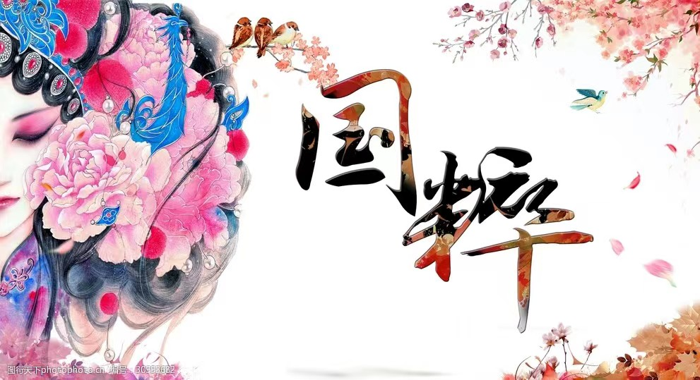

角色介绍
京剧·生角
生行是扮演男性角色的行当，在京剧中的地位非常重要。生行包括老生，小生，武生，红生，娃娃生等几个门类。
京剧·旦角
京剧旦行扮演各种不同年龄，性格，身分的女性角色。旦行又分为正旦，花旦，花衫，刀马旦，武旦，老旦等专行。
京剧·净角
人物按身份，性格及其艺术，技术特点的不同，大体上又可分为正净，俗称大花脸；副净，俗称二花脸；武净，俗称武二花。副净中又有架子花脸和二花脸。
京剧·末角
由中年以上的男子扮演末行。在北杂剧中，末称末泥或末尼色，泛指末本正角。
京剧·丑角
俗称小花脸。因化妆时在鼻梁上抹一小块白粉，故而以丑为名。又因和净行的大花脸，二花脸并列，又称三花脸。丑行的丑是指扮相不俊美，并非专指品质上的丑恶。丑行扮演的角色既有阴险狡诈的人物，也有正直善良的形象。丑行分为文丑、武丑两种。